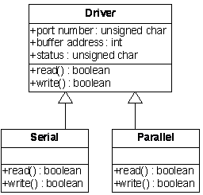

Lesson 4
A Tour of C++ - Object concepts - UML Class Diagrams
Design, Development, and Test
Thinking in Models
Software systems are becoming increasingly complicated and difficult to develop. Today even small systems tend to exhibit much greater capabilities and increasing numbers of features. Thus, we are continually striving to devise ways to attack complexity (it seems to be winning sometimes). One such method is to develop and use models to try to abstract away the inessential details and focus on what's important. Models are simplifications of a problem—an abstract representation of a real-world entity. Objects, too, are an abstraction, a model. As we learned, they encapsulate data and the functions that operate on the data.
At this point, it's a fair question to ask what makes a good model. First, it must be simple. It must be accurate. It must support abstraction and refinement. Finally, it must be extensible.
Objects and the Object Model
We'll begin our study of objects and the object model by examining the process of solving problems and thinking about some of the things that are important . . . hold on here, it's important tell a little bit more about what an object is.
Fair enough. Certainly one of the first questions that people new to object centered design ask is: "What is an object?" So, let's see.
An object is any thing—either tangible or conceptual—that is a part of the problem domain of the software you are developing. Objects have three fundamental characteristics: identity, state, and behavior. A significant part of object oriented analysis is the identification of the objects in the problem domain. So, how do you know when something in your problem domain is an object? A good place to start is in the requirements document (we'll learn how to write this in a future lesson—it's basically a description of what the customer wants). As you read the requirements, look for nouns: the people, places, things, and concepts. Each is a potential object and each will have identity, state, and behavior.
Object Identity
Identity is what distinguishes an object from all other objects in a software system. This may mean that it has a unique name, or that it has some other way of being uniquely identified within a program (such as a numeric identifier), or a unique position within some container of objects.
Object State
Objects have attributes. For example, an apple is red, green, yellow, or some mixture of these three colors. Apples also have shape, size, and weight attributes. The current value of all these attributes for a particular apple is called its state. In the object world, an object always knows its own state, and it may change that state in response to the occurrence of events or to messages it gets from other objects.
Object Behavior
Objects exhibit behavior by responding to events or to messages from other objects. In C++ these messages take the form of a function call. These messages may be queries about an object's current state, requests for it to change its state, or requests for the object to perform some service.
To see how these concepts might apply, let's propose that we have a display that is showing a variety of different geometric shapes. Let's make several of them rectangles. When we want to move a Rectangle class object from one place to another, we first have to identify which Rectangle we want to move. We then send it the move message with some data that tell it where we want it to move on the screen. This is a pretty complex piece of behavior, and to achieve it, the object will execute three other, simpler pieces of behavior: erase, set the new position, and draw. Another way of looking at this process is as just a change in the state of the Rectangle; erasing makes it invisible, moving it changes its position, and drawing makes it visible. We will learn much more about the interrelationship of object state and behavior in later lessons.
Class
In C++ objects are implemented using classes. A class is similiar to a C struct in that the class contains data members. For example, an employee class might look like:
class Employee
{
std::string firstName;
std::string lastName
};
A class may also contain member functions that have access to the member data. Calling a member function on a class is how we send a message to a C++ object. We'll get into more details of class in later lessons.
Instance
In C++ an instance is a variable of a particular class. When the variable is created it is said that it is "instantiated". Here we instantiate two Employee class instances:
Employee janitor; Employee ceo;
janitor is an instance of class Employee, and ceo is another instance of class Employee. We can also call these instances objects. A C++ developer might say I've got an Employee object, or the developer might see I've got an Employee instance. Both phrases have the same meaning.
Object Oriented Design and C++
To most effectively use C++ we must understand Object Oriented analysis and design. Throughout this course and the entire C++ certificate program we will study Object Oriented analysis and design hand in hand with our learning and use of C++. We will first learn object oriented concepts (such as inheritance) before we attempt to implement these concepts in C++. Object oriented analysis and design came before C++. So first we'll attempt to get a good grasp on these OO concepts. Learning C++ will then be simpler. We'll be saying Oh, that's how C++ does data hiding, or Oh, that's how C++ does inheritance.
The OO analysis and OO design would be the same (or almost the same) regardless of the language we chose to implement those concepts. So in this lesson the focus is on OO concepts and design. Through the remainder of the course we will then focus on how to implement these OO concepts in C++.
What is the advantage of programming with objects versus the programming without objects? One way to answer this is with an example. In C strings are implemented as arrays of characters. To manipulate strings in C we must write code that knows many of the details of how strings are implemented. We must allocate and deallocate memory. We must ensure the string is terminated with a null character. We must recognize the difference between operating on the string, and operating on the pointer that holds the address of the string. We must make sure we follow all the rules correctly with the string to ensure there are no bugs. We must do this over and over again in C for each string we use. When you look at C code that manipulates strings the code that manipulates strings often times makes it hard to see the higher level business rules the code is implemented versus the lower level details of string manipulation
In C++ we use the std::string object. The lower level details of manipulating the string are hidden from us. These details include allocating memory, copying characters, comparing them to other string and other operations. These low level details are implemented once within the string class. We can use these details over and over again without continually reimplementing them. The amount of code required for us to manipulate a std::string is much less. In C++ we program at a higher level with std::string. As a result in C++ code (when well written) it is much easier to look at the code and see what it is trying to accomplish without getting lost in the low level details of string manipulation.
Problem Solving
When we begin the design of a new product or need to incorporate several new features into an existing one, we begin with a set of requirements usually stated in English. Our goal is to map those requirements—the real world—through a series of transformations into a solution—the abstract world. We see this process reflected in Figure 1.1, below.
During the design process, we move from the concrete, real world into the abstract. At the Application level, entities in the problem statement are abstracted into types. At the Solution level, these entities become our objects. We abstract these into classes.
Figure 1.1—Concrete versus Abstract
Let's consider a simple problem. Our mom said, "You're such a slob, get some culture." Since we always listen to mom, we decide to go start a business making yogurt. When making yogurt in large batches (batch processing, of course), we need to have the proper temperature throughout the mixture. If the temperature is too low the cultures may not grow and if too hot, the wee beasties may die. Thus, we see we need to be able to measure temperature . . . an entity. Because we're growing the yogurt in a large vat, we'll need to measure the temperature at several different locations . . . ah ha, another entity. We now abstract both of these to floating point numbers, the types. In application space, we now have our entities and our types.
Meanwhile, over in the solution space, we have temperature objects and location objects which we will abstract to Temperature and Location classes. If we were to design such a system, we'd probably create a parent class called YogurtTemp or some such thing. Such a class would have at least two data members: the temperature and the location within the vat where the temperature was measured.
With this brief introduction, we begin with the question, Can you think in Objects?
Thinking in Objects
To start thinking in objects, let's first define some terms.
- Object-oriented Programming is a method of implementation in which a program is organized as a co-operative collection of objects. Each such object represents an instance of some class. Within the program, the classes may be members of a hierarchy of classes, united via inheritance relationships. This is the approach we will use as we begin to explore the design process. Often, we'll use aggregation (collecting things together) rather that inheritance, though.
- Object-oriented Requirements is a method of analysis that captures the behavioral requirements of a system.
- Object-oriented Design is a method of design encompassing the process of object-oriented decomposition and a notation for depicting logical and physical models of system.
When doing object-centered design, we will often use the Unified Modeling Language (UML) as our modeling notation and one of our tools. We'll study UML throughout this course.
Object-oriented Analysis is a method of analysis that examines the requirements of the problem from perspective of (entities) objects and classes that are found in the vocabulary of the problem domain.
When we analyze a problem, the vocabulary of the problem domain is where we look for the nouns, verbs, adjectives, and adverbs that will become our objects, actions, and object properties. We will use the CRC card (Classes, Responsibilities, Collaborators) method which is one common approach for object discovery.
Class-responsibility-collaboration cards (CRC cards)
Class Responsibility Collaboration (CRC) cards are a brainstorming tool used in the design of object-oriented software. They were proposed by Ward Cunningham and Kent Beck. [1] They are typically used when first determining which classes are needed and how they will interact.
CRC cards are usually created from index cards on which are written:
- The class name
- Its Super and Sub classes (if applicable)
- The responsibilities of the class.
- The names of other classes with which the class will collaborate to fulfill its responsibilities.
- Author
Using a small card keeps the complexity of the design at a minimum. It focuses the designer on the essentials of the class and prevents her/him from getting into its details and inner workings at a time when such detail is probably counter-productive. It also forces the designer to refrain from giving the class too many responsibilities. Because the cards are portable, they can easily be laid out on a table and re-arranged while discussing a design with other people.
A common method to determine what cards should be created is to read a specification for the program being designed and consider if each noun should be a class and if each verb should be a responsibility of the noun or class to which it belongs. Naturally, the existence of a noun or verb does not require a class or responsibility in the program, but it is considered a good starting point.
The Object Model
In the opening of this lesson, we've identified several of the more common programming styles, classified by how data and functions are encapsulated. We've learned that in the object-centered style, the means of encapsulation is objects. Clearly, there is no single method that is the best for every problem and every application. Each of these programming paradigms has its strengths and weaknesses. Each has its own conceptual framework. Each requires its own way of thinking about the problem. For the object-centered style, the framework is the object model. When we move inside the object, we find the model comprises four major elements and three minor ones. The major elements include abstraction, encapsulation, modularity, and hierarchy. The minor elements consist of typing, concurrency, and persistence. We will examine each of these.
Abstraction
Abstraction is an effective means of dealing with complexity. When we abstract something, we focus on its outside view . . . on its outside behavior . . . how others perceive it. An abstraction identifies those essential characteristics of the object that distinguish it from all other objects. The abstraction defines crisp conceptual boundaries. A good abstraction emphasizes details that are significant and suppresses those that are not. In designing objects, we identify two main kinds of abstraction: entity and action.
With entity abstraction, we develop objects or models that represent elements in the problem domain. Such models, usually nouns, directly parallel the vocabulary of that domain. These may represent a linked list, electronic part, display device, or file system. At this level, we make no statement about how such an object is implemented.
Action abstraction(or action objects), based upon the verbs in the problem domain, provides a generalized set of operations that all perform the same kind of function. Such actions may include inserting, copying, moving, sorting, or searching.
Encapsulation
Encapsulation is a complement to abstraction. Encapsulation is grouping data and functions that operate on that data together. In C++ objects have both data and functions that operate on that data. The data and functions are encapsulated using the C++ class. The data associated with a class is called "member data". Functions that operate on that data and that are associated with the class are called "member functions". Member is used as in "member" of the class.
Information Hiding
In object-centered design, we look at an object as a "black box." It must have a public interface that permits the user of instances of the object to access the object. At the same time, it does not give access to the internals of the object. The internals are kept private. In other words the private data is "hidden". Encapsulation provides explicit barriers among abstractions; it is the process of compartmentalizing elements of an abstraction. Its structure serves to separate the constructional interface from the implementation.
When we use information hiding, we want to make certain inessential and unnecessary details inaccessible. Our motive is to reduce the number of details that we need to deal with. We want the interaction among objects to be as simple as possible, to reduce the chances of incorrect or unintended interactions or mistakes. Thus, encapsulation helps reduce the chances of system corruption. That is, a change in one area does not result in unanticipated change in another.
Consider, for example a bank account. We can make deposits or withdrawals or enquire about our balance, using a teller, a bank machine, or a telephone. We do not have to have knowledge about how such operations are accomplished or changed, presuming they're done correctly (although, looking at some of today's banking, we may want to pay a bit more attention).
Polymorphism
Polymorphism means that some code or operations or objects behave differently when responding to the same message. For example, the + (plus) operator in C++ performs different operations depending on the data type it is applied to:
4 + 5 <-- integer="" addition="" 3="" 14="" 2="" 0="" --="" floating="" point="" s1="" bar="" string="" concatenation="" pre="">
This type of polymorphism is called overloading.
Typically, when the term polymorphism is used with C++, however, it refers to using virtual methods. A virtual method is defined in a base class, but the implementation (i.e., code) is provided in the derived class. A classic example is an Drawable base class with a polymorphic method draw(). Both a Circle and Square subclass Drawable. Circle::draw draws a circle, while Square::draw() draws a square. Note we have also introduced the :: operator. :: is called the scope resolution operator and is used to determine which draw method is being referenced in the code.
Modularity
Modularity is the act of partitioning a program into individual components to reduce complexity. The modules serve as physical containers and declare the classes and objects of the logical design. Modularity describes a system that has been decomposed into a set of cohesive loosely coupled modules. "Loosely coupled" is the key phrase here. We want to localize the effect of changes. A common problem among some of my beginning students is this lament: "But I never changed anything near there! Why did that suddenly break?" Ahhh, they'll learn, they'll learn, as they gain more experience . . . but do they listen now?
We must consider several things about modularity.
- First, modules serve as elementary, indivisible units of software or hardware; this is still a consideration in object-oriented design. We try to package classes and objects to promote reuse. When we begin to design something, we must always remember to look to the next project. Ask questions like, "How can we modify our current design to support a future feature?" This is where the marketing and sales people really help us.
- Second, many compilers generate object code in segments, one for each module. Such actions may place size restrictions on the individual modules. Poor module builds can significantly affect memory access, increase cache misses, and promote thrashing.
- Third, when modularizing a design, we should consider work assignments. Often, such assignments are made module by module. We should consider defining module boundaries so as to minimize interfaces among different parts of the organization. Such a practice simplifies the process of subcontracting some of the work as well. It also lets experienced people keep the good stuff and give the mundane—I mean, opportunities to learn!—to the new designers.
- Fourth, we should package the modules with the goal of stabilizing the module interfaces during the early part of the design. We'll talk about how we approach this shortly.
- Finally, when modularizing a design, we need to consider security issues. Whether working for a toy company or on a sensitive government project, we need to consider what information we make available to outside vendors. By properly decomposing a system, we can more easily select which portion we want to farm out and which we need to retain control over.
Inheritance
An object can inherit member functions, member data, and member function signatures (i.e., interface) from another class. A class that inherits from another class is called a subclass or derived class. A class that is inherited from is called a superclass or base class. There are 3 basic inheritance types:
- Implementation inheritance - the subclass inherits member data and/or member function implementations.
- Interface inheritance - the subclass inherits member function signatures only. The member functions must be implemented in the subclass. No member data or function implementation are inherited from the base class.
- Abstract inheritance - the subclass inherits both implementation and interface.
Some languages provide keywords for the different kinds of inheritance be it interface inheritance, implementation or abstract. C++ does not provide explicit keywords for these different types of inheritance. C++ provides these different types of inheritance with particular idioms which we will cover later in the course.
Objects may also inherit from more than one base class. This is called multiple inheritance.
Hierarchy
Continuing in the quest to reduce complexity, we rank or order our set of abstractions into inheritance hierarchies. Identifying and understanding such hierarchies helps us to get a better grasp on our problem. In early days of OO development it was common to have deep hierarchies (e.g., classA subclasses classB which subclasses class C which subclasses class D) with no multiple inheritance. These deep inheritance structures became cumbersome to work with. Today, you will more often find flatter hierarchies and more multiple inheritance (e.g., classA subclasses classB and classC, and classD). Today interface inheritance is also used more than it used to be as it provides more flexibility.
ISA and HASA
Note that both these terms can, optionally, be spelled with a hyphen. ISA and IS-A are both acceptable, as are HASA and HAS-A.
Two of the most important hierarchies are the ISA (pronounced "is a" and meaning is a) and the HASA (pronunciation follows naturally). The former is traditional inheritance and is usually implemented through a public inheritance structure; the latter expresses composition or aggregation.
The ISA hierarchy should only be used when the derived class is a-kind-of the base class—that is, when the derived class extends the functionality of the base class or is a specialization of the base class. We can't derive wheels from oranges (or something that sounds like oranges), for example, simply because both are round. Further, the ISA relationship is one that exists solely between related classes.
The HAS-A relationship is one of aggregation or composition and suggests containment. We recognize three different forms of such a relationship. When we're working with classes, we have one class defined within a containing class. Recall the basic linked list data structure in which we have a collection of nodes, connected one to the next through pointers. One approach for implementing such a list is to define a class Node within the List class. When we use such a technique, we take advantage of the strengths of the object approach in the design of the contained class and we don't pollute the namespace. Often times, also, the properties or functionality of the contained class aren't relevant at a broader scope.
We can also work with a class and an object. Now, we define the class Node outside of the class List then use an instance of Node within List. In such a case, definition outside the class permits instances of the class to be used in other portions of the program.
Finally, if we are working with objects, we can have one object referring to a second. In such a case, the second object is used by the first, but is not intrinsically a part.
When we are working with the HAS-A relationship, we must also be aware of and concerned with the notion of ownership. With such ownership comes the responsibility of managing the memory associated with the owned object. In the first two cases above, we have a definite sense of ownership.
Two supporting types of relationship are CREATES-A and USES-A. The former type object acts in a server or producer role, while the latter complements the relationship in the consumer or client role. An X window manager acts as a window server to a client. Hence, the window manager is a CREATES-A type object and the client a USES-A type object.
Typing
Defining a class permits us to extend the language by adding a new data type. When we write a new C++ class, we have just added a new type to our program. The notion of typing derives from the formal theories of abstract data types. Simply put, the type of a object gives a precise characterization of its behavioral properties. We use the words "type" and "class" interchangeably. Typing is thus an enforcement of the class of an object. That is, objects of different types may not be interchanged, or they may be interchanged only in restricted ways. It's also the case that some objects of different types may be converted to another type.
We have three different kinds of typing: strong, weak, and none. With strong typing, type conformance is strictly enforced. Operations cannot be called upon an object unless the exact signature of the operation is defined by the object's class or superclass. A violation of the type is detected at compile time. With no type enforcement, an object of any class can send a message to an object of any other class. Type violations may not be known until runtime (with potentially disastrous consequences, I might add). On the other hand, weak typing is a mix of strong and no typing. C and C++ fall into this category. C++ has a tendency towards stronger typing and C towards the weaker. With weak typing, it's possible to ignore or suppress type information.
The words "typing" and "binding" are often used interchangeably, and often with qualifiers such as static, dynamic, or strong. Let's look at what these mean. Static typing and strong typing are different concepts. Strong typing refers to type consistency, whereas static typing refers to the time that variable names are bound to the types. Static typing, also known as static or early binding, simply says that the types of the variables and expressions are fixed at compile time. In contrast, dynamic typing—also called dynamic or late binding—states that the types of the variables and expressions are not known until runtime. Thus, a language may be both statically/dynamically typed and strongly typed.
The semantics of dynamic binding yields the concept of runtime polymorphism. Once again, this concept is taken from type theory. It simply means that a single name may denote objects of many different classes related by some common superclass. Polymorphism occurs when the concepts of inheritance and dynamic binding interact. Polymorphism is one of the most powerful features of object-oriented languages. We'll discuss the advantages and disadvantages of using polymorphism in much greater detail in a later lesson.
Concurrency
Concurrency is related to an ability to handle many different events simultaneously. Systems supporting concurrency may have many threads of control; some may be transitory and others may last the lifetime of the system execution. We distinguish between heavyweight processes, which are typically managed by the operating system, and lightweight processes or threads, which usually co-exist with other processes and share a common address space.
Concurrency focuses on process abstraction and synchronization. In the object-centered designs, we are concerned with collections of co-operating objects. Some of these objects may be active—that is, centers of independent activity—while others may be inactive. Concurrency is the property of objects that models parallel operations through an implementation based upon time-sharing a single processor.
Persistence
The final property of the object model that we consider is persistence. A software object takes up space; it exists for a finite period of time. Persistence, then, is a property of an object that describes its existence in time. Such an existence may take on any of the following values:
- The lifetime of an object may be transient, such as a variable in an expression evaluation.
- Local variables persist while execution is in scope and then vanish when the scope is exited.
- Certain variables may have a lifetime for which the extent is different from their scope. These, for example, may be global variables.
- Other variables persist between executions of a program, between versions of a program, or beyond the life of the program.
Variables in the first three categories are found in what we typically view as traditional programs. Those in the latter categories are found in the domain of database technology. Persistence, however, is concerned with more than just data lifetime. The state of the object must be considered as well. Values must be consistent, particularly in situations such as physically or temporally distributed systems or simulations. The class or type of an object must be considered in database situations. Every program must interpret the data in the same way.
The Class Diagram
The UML notation for expressing the structural relationships between classes is rich without being overly complex. The class diagram presents the various kinds of objects in the system and captures the relationships, called associations, among them. As illustrated in Figure 2.2, below, the notation for a class is a rectangle. Illustrated is a simple version with just name. Such a representation is often sufficient for the exploratory phases of modeling when our primary concern is the structural relationships between or among classes rather than with their attributes and operations.
Figure 2.2—Class
If more detail needed, the rectangle is subdivided into three areas as shown in Figure 2.3, below.
- Top area gives the name of the class or object.
- Middle section identifies all of the properties of the object. These will generally be declared inside the module implementation and thereby hidden from the casual user.
- Third pane identifies the operations that the class or object is intended to perform.
These establish and implement the external behavior of the object. They provide the public interface to the object.
Object Name
Object Name (or Class Name) is the identifier for the class. A common naming convention suggests that classes begin with an upper-case letter and subsequent words in the name also start with a capital letter—for example, MyClass. We do this to distinguish class names from variable names, which typically begin with a lower-case letter. The name of the class should be chosen so as to describe, in simple terms, what real world entity the class implements.
Object Properties
The properties of an object provide a mechanism to capture the structural features of that object. The property may be further elaborated as attributes, associations or operations.
Attributes
Attributes describe a particular characteristic of a property such as the address of an output port. The syntax is given as
visibility name:type = optional default value
The visibility qualifier indicates who has access to (can read or change) the attribute. Three levels of visibility are specified:
-
Public—( + )
The attribute is visible and can be accessed or modified by all objects in the system including the containing class. -
Protected—( # )
The attribute is visible within instances of the containing class and all of its subclasses, not to any other objects -
Private—( - )
The attribute is only visible within instances of objects of the containing class. Private visibility is how we enforce encapsulation and information hiding; it is virtually always the preferred visibility for attributes for this reason.
Name is the identifier for the attribute. A common naming convention suggests that attributes begin with a lower-case letter and subsequent words start with a capital letter. For example, firstName. Type is the type of the attribute which can be either a user defined class or an intrinsic type.
Associations
Associations capture how the object relates to other objects within the system. A property can also be quantified by a multiplicity attribute, thereby identifying how many objects may fill the property. For example, the wheel on an automobile has a multiplicity of 4.
Operations
The notational elements for the visibility of operations are similar to attributes. Typically, we designate operations to be public because most form the public interface of the class. On some occasions, we do want them to be protected or private. The syntax for specifying operations is
visibility name(parameter list): return type
The naming of operations follows the same convention as the naming of attributes. The first word begins with a lower-case letter and subsequent words begin with an uppercase letter.
The parameter list is a comma-separated list of parameter expressions. The parameter naming conventions are same as for attributes. The syntax for a parameter in the list is
direction name:type = optional default value
Direction is one of in, out, or inout.
- in, which is the default value, means that the operation uses the value of the parameter, but, does not change it.
- out, indicates that the parameter is being sent to the operation for the sole purpose of being changed.
- inout, the input value is used and will potentially be changed by the operation.
Several common operation types are needed in most classes. These include the following:
- Constructors—operation(s) required to initialize an object of the class. Some languages have special naming requirements for these operations.
- Destructors—operations executed when an instance of the class goes out of existence. Often these are used to return system resources that were obtained when the object was created or during its subsequent life cycle. Some languages have special naming conventions for these, while others don't require them at all.
- Accessors (queries, "getting" operations)—operations that allow getting the current value of an attribute of the object. By convention, the names of these often start with "get" followed by the name of the attribute, or "is" followed by the attribute name in the case of Boolean attributes.
- Mutators (modifiers, "setting" operations)—operations that alter the values of attributes. By convention, the names of these start with "set", followed by the name of the attribute.
- Operations directly mapped to the behavioral responsibilities of the class.
- Helper operations that support meeting the behavioral responsibilities. These typically have a visibility of "protected" if we want subclasses to have access to them or "private" if we wish to hid them.
We can usually assume that there will be public accessors and mutators for attributes that need to be available to other objects, so to save space they are often not shown in models. The same is often true of constructors and destructors. These leave operations that directly or indirectly support meeting the responsibilities of the class. These are the most important operations to model because they specify how the classes in the system fulfill their responsibilities.
There are no hard and fast rules for naming these kinds of members, but there is a widely-used convention that operations are named with verbs or verb phrases. Whenever the method performs some action on another object, it is common to include the class name of that object in the verb phrase forming the method name. For example, an operation called renameFiles in a Directory class object would be understood to change the names of the File class objects contained in the Directory.
Class Diagrams—Class Relationships
Now that we have learned the notation and syntax for modeling classes themselves, the next aspect of UML structural class modeling to explore is how to express the relationships between or among the classes.
There are some common relationships between classes; the UML has notational devices for each. In the UML, a relationship is a connection of some kind between two or more classes. These relationships fall into three broad categories:
- Generalization—a class is related to another class by means of generalization or specialization, as a superclass or subclass. Such a relationship is also referred to as parent-child or inheritance.
- Association—a class has a structural relationship to another class.Such a relationship is also denoted containment or aggregation.
- Dependency—a class uses another class.
Generalization or Inheritance
Generalization, specialization, or inheritance are terms that we find used interchangeably to express the same basic concept. We are simply viewing the relationship from several different perspectives.
When describing (or using such a relationship in a design) we are merely saying that one class has all of the behavior, properties, and attributes of another class but, may have slightly modified or added to them. A sports car is a specialization of the general concept of a car. The car is a generalization of a sports car. The SportsCar class is a child of the Car class. TheCar class is a parent of the SportsCar class. Said yet another way (gees enough already, I get the point), the sports car inherits (has) all of the general car characteristics but is much cooler in many ways.
We express generalization (specialization)or inheritance using a solid line terminating in a hollow arrow. Figure 2.4, below, presents a portion of an external world communications interface from a computer.
Figure 2.4—External-world Communications Interface from a Computer

Therein we represent the relationship between the parent—Driver and two children —Serial and Parallel. We say that Serial or Parallel are a kind of (AKO) Driver or that Serial is a(IS-A) Driver. Observe that the arrow is directed from the child to the parent.
The diagram captures the requirement, through the parent interface, that each of the different types of interface (Serial or Parallel) must support a common subset of capabilities.
- There must be a port number associated with each interface
- The driver must provide the address to an I/O buffer
- It must manage a status flag
- It must implement the read() and write() functions to execute the transfer
The "+" appearing in the diagram indicates that each of the corresponding elements is publicly visible.
Association or Containment
The inheritance relationship is necessarily hierarchical. There are times, however, when such a relationship does not adequately express the interaction between classes. Under such circumstances, rather than hierarchical, an egalitarian relationship between classes and instances of classes may be more appropriate. There are at least three variations on such a relationship; these are association, composition, and aggregation.
Let's examine the association first. An association is the weakest of the three. Visiting the business world for a change, a typical example of an association is the works for relation we find between an employee and a company. Clearly this is not a hierarchical relation (sure Clyde may be your boss, but, most of the time, you are not Clyde's child). Neither is it a containment type of relation.
We express the association relationship by connecting the associated classes by a solid line as shown in Figure 2.5, below.
Figure 2.5—Association
Multiplicity (sometimes called cardinality) represents information about how many objects participate in the association. A multiplicity at one end of the association denotes that for each object at the other end of the association, there must be the number of objects specified in the multiplicity expression. The multiplicity expression may be a specific number or range of numbers. The standard expressions are: 1, * (many), 0..1 (zero or one), 0..* (zero, 1, or many), or m..n ("m" to "n", as in 3..5). In the figure, a Person may be an employee of many Companies, while a Company has one to many Persons as employees.
Observe how we annotate the association in the diagram.
Containment conveys the idea that one object is made up of several others. The relationship implements a whole-part relationship. Under the UML, we can express two different forms of containment:
- aggregation; and
- composition.
Aggregation
Aggregation expresses a whole-part relationship in which one object or module contains another module. The key characteristic of an aggregation is that one or more objects are parts of a whole. A more complex function is decomposed into number of simpler functions or modules.
The owned module(s) may be shared with other modules outside of the aggregation. Under such conditions, rules must be established to ensure proper management of the shared module.
Figure 2.6, below, illustrates a design in which a graphics display is implemented as an aggregate of n windows. Certainly windows can exist outside of the display.
Figure 2.6—Aggregate
The UML diagram for the aggregation relationship presents both the whole and its parts connected via a solid line that originates from an open diamond on the end associated with the whole and terminates on the end associated with the part.
Composition
The composition relationship is similar to aggregation. However, the notion of ownership of the parts by the whole is much stronger. Elements of the composition cannot be part of another object, that is, they cannot exist outside of the whole object. The idea is loosely analogous to local variables in a function. Once we leave the scope of the function, the local variables disappear.
Consider a schedule. It is made up of a number of intervals. Without the schedule, the intervals have no meaning.
We express such a relationship as shown in Figure 2.7, below.
Figure 2.7—Composition
The schedule is composed of 1 to n intervals. Observe that the diagram is similar to that for the aggregation except that the connecting line now originates from a solid rather than open diamond. We annotate the relationship as a 1 to n composition.
Dependency
As the term suggests, dependency means that one class or object depends on the behavior of another object. This implies that if the public interface or behavior of the class depended upon changes, the dependent class behavior may change, as well. While a goal of good object centered design is to minimize dependence between classes, it can never be eliminated in practice; otherwise we couldn't have any collaboration between objects at all.
The best practice is to ensure that you design a persistent public interface for each class that is as simple as possible, using standard naming conventions, with the most general return types. Such an approach allows you to add to the interface later as new requirements present themselves and to change the underlying implementation without changing the interface. You never want to get into a situation where substantial development has taken place and you are forced to make major changes to the public interface of a class, thus requiring many changes to dependent classes.
Dependency is modeled in the UML using a dashed directed line from the dependent class to the class depended on. When dependency represents just the use of a class as an attribute, it is seldom modeled. An example is String class attributes firstName and lastName in a Person class.
However, when a substantial part of the behavior of some class is delegated to another class, the dependency relationship should be modeled. For example, back in the business world, suppose we had an Employee class that has a calculatePay operation. Further, let the employee's pay be determined not only by the hours worked, but also on one of several different compensation plans, represented by a CompensationPlan object, with a calculateCompensation operation. Such a design represents a substantial delegation of responsibility from Employee to CompensationPlan, and should be modeled as a dependency relationship as we see in Figure 2.8, below.
Figure 2.8—Dependency
Interface
An interface is an inheritance relationship. With an interface only the signatures of the member functions are inheritied. Member function implementation and member data are not part of the interface class, and thus not inheritied. We express an interface in a manner similar to that which we use for inheritance. We use a dashed line terminating in hollow arrow and tag the interface with <<interface>>.
In Figure 2.9, below, the interface stack gives the underlying array public appearance of a stack.
Figure 2.9—Interface
The operations, push() and pop(),perform the necessary steps to transform access to the array as necessary.
Summary
In this lesson, we have learned several ways in which the C++ language has extended C, including a new library of iostream functions to get data into and out of our programs.
Practice Questions
Test your understanding of the concepts presented in this lesson by working through the following practice questions, then check your answers with Answers to Practice Questions for Lesson 4.
- What is UML?
- What are the main elements of a class diagram?
- What are some of the main relationships that can be expressed between classes in a class diagram?
- What are CRC cards and what does the acronym stand for?